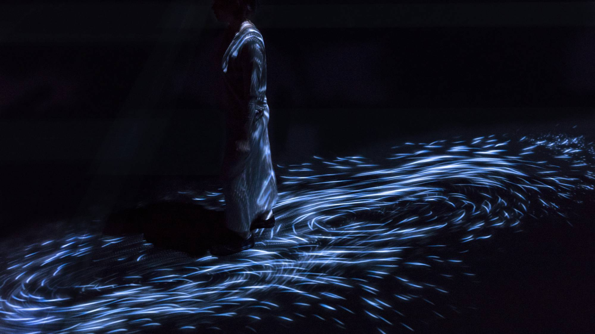
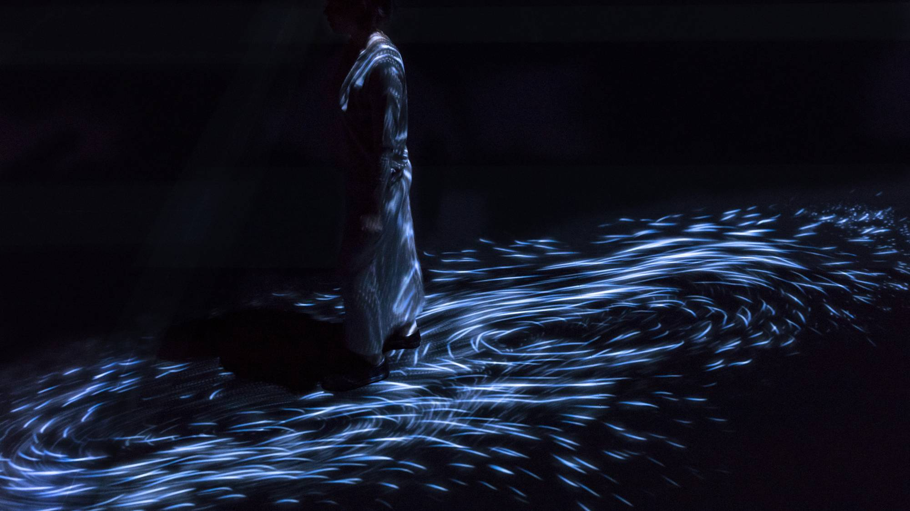

When a person moves, a flow is born, and that flow creates an influence that extends far
and wide. The movement of other people will likewise create a flow, coming together and creating a vortex.
When people stop, or if people leave the space, the flow will eventually disappear and nothing will exist in the space.
The flow in the artwork is expressed as a continuum of particles, and lines are drawn in three-dimensional space
according to the trajectories of those particles. The accumulation of lines that represent the work are then flattened
according to what teamLab calls Ultrasubjective Space.
Each particle releases an extremely brief tone when it moves. Through the movement of many particles, the
tones turn into continuous music.
Website
Rewind is a digital clock collection designed to revive a physical link with the
reading of the time that has become pervasive and unconscious since the digital revolution. While the movements
relative to the reading of time are now gone, each clock offers a unique way to rewind its mechanism. When nowadays
the gesture of interaction is minimized to touch, they propose to give it a more physical dimension by playing with
recharge or energy release and either to rewind the clock to display the time, or to go back in time with the nostalgia
evoked by the type of interaction. Their codes, drawing on childhood memories, transform what was once seen as a task
into a fun activity.
Website 
